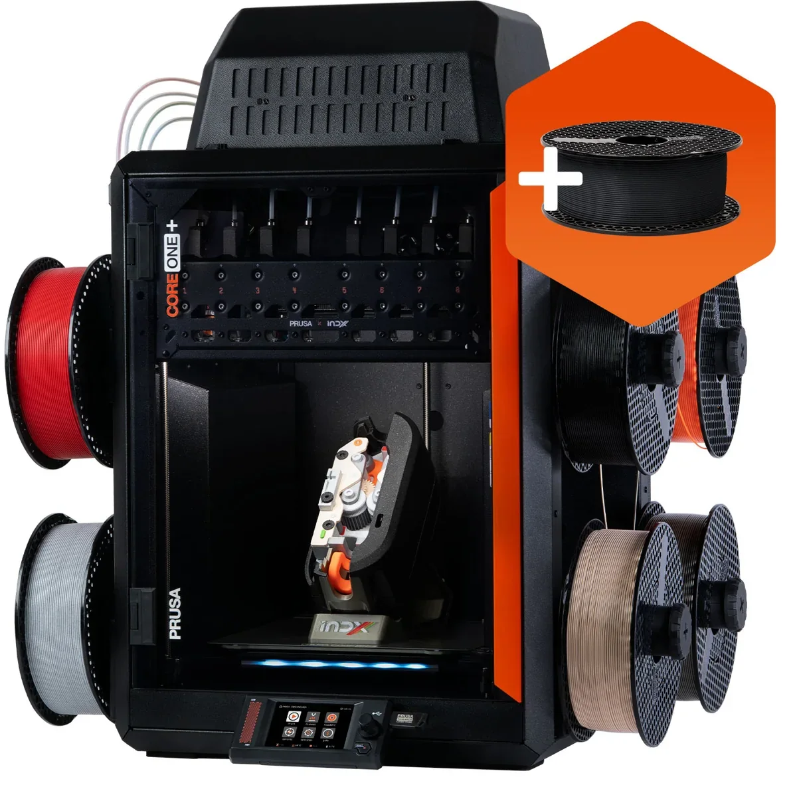

Build volume
250 x 220 x 270 mm - the CORE One+ (Gen 2) figure from the shared product page; Prusa does not publish a separate INDX build volume
Advertised dimensions; check usable space and variants.
CORE One+ (Gen 2) fitted with Prusa's INDX multi-tool system for four or eight filaments, sold assembled or as a kit.

250 x 220 x 270 mm - the CORE One+ (Gen 2) figure from the shared product page; Prusa does not publish a separate INDX build volume
Advertised dimensions; check usable space and variants.
290 C claimed max nozzle temperature, 400 C with the optional HT hotend (shared platform)
Published limits; hardware and firmware limits may differ.
$1,850.93 for the INDX 4-Tool and $2,082.41 for the INDX 8-Tool on prusa3d.com, Aug 2026; the 8-Tool assembly kit is $1,804.63. Camera and filtration bundles run to $2,152.78
Dated listing, not a live offer. Read the configuration and region.
Understand the hardware, explore compatible changes and find a diagnostic starting point when something goes wrong. Expand the specification sections for every recorded value, condition and original reference.
Dimensions, construction and the hardware that moves the print.
| Property and unit | Published value and conditions | Sources and dates |
|---|---|---|
| Manufacturer & exact marketed model name (verify the exact product identity first) | Prusa CORE One+ (Gen 2) INDX, listed as "INDX 4-Tool" and "INDX 8-Tool" variants and as an "INDX 8-Tool Assembly kit" | 2 sources |
| Release date (announcement and actual shipping) | Announced as shipping on 20 August 2026 ("INDX, Shipping Has Started, Complete Printers Open for Orders"). Prusa's own front page in Aug 2026 announces "Prusa CORE One+ (Gen 2) INDX, Shipping Has Started, Complete Printers Open for Orders", with the assembled 8-tool machine quoted as shipping from 15 October and the kit from 29 October | |
| Street price (USD; dated snapshot per entry) | $1,850.93 for the INDX 4-Tool and $2,082.41 for the INDX 8-Tool on prusa3d.com, Aug 2026; the 8-Tool assembly kit is $1,804.63. Camera and filtration bundles run to $2,152.78 | 2 sources |
| Variants & sibling models — and how to tell them apart (spec-contamination risk) | INDX is a multi-tool option on the CORE One+ (Gen 2) product page rather than a separate printer, sold in 4-tool and 8-tool configurations, plus a CORE One/+ INDX conversion kit for existing machines. All of the body, hotend, bed and electronics figures below come from that shared CORE One+ (Gen 2) page and were not published separately for the INDX machine, so treat them as platform figures. Prusa also sells the unrelated MMU3, which multiplexes five filaments through one nozzle | 2 sources |
| Property and unit | Published value and conditions | Sources and dates |
|---|---|---|
| Build volume X×Y×Z (mm) — advertised vs actually usable | 250 x 220 x 270 mm - the CORE One+ (Gen 2) figure from the shared product page; Prusa does not publish a separate INDX build volume | 1 source |
| Machine footprint (mm) & clearance needed (cable/spool overhang) | 415 x 444 x 555 mm - shared CORE One+ (Gen 2) figure | 1 source |
| Enclosure: open / enclosed; panel material; door/lid | Fully enclosed with active chamber heating up to 55 C (shared CORE One+ platform) | 1 source |
The manufacturer uses its calibration model to separate belt/gantry, tool-offset, nozzle-cleaner and plate-cleanliness symptoms. After belt changes, repeat the dependent dock, homing, offset and cleaner calibrations.
Applies to: CORE One INDX; use the test matching four or eight tools and the printer’s current calibration wizard.
| Property and unit | Published value and conditions | Sources and dates |
|---|---|---|
| Kinematics (bedslinger i3 / CoreXY / other) | CoreXY with a multi-tool head-changing system (INDX); Prusa's comparison table gives CoreXY for the CORE One family | 1 source |
Extrusion, heating, leveling and material handling.
The Prusa integration supports four or eight dedicated tools and multiple nozzle sizes. Match each installed tool’s nozzle size and material setup to the printer/slicer configuration.
Applies to: Production Prusa CORE One+ Gen 2 INDX; conversion-kit generation and tool count must match. The separate HT Hotend kit does not fit INDX.
| Property and unit | Published value and conditions | Sources and dates |
|---|---|---|
| Type (direct drive / bowden) & design name | Nextruder direct drive, 10:1 planetary gearbox (shared platform) | 1 source |
| Property and unit | Published value and conditions | Sources and dates |
|---|---|---|
| Max nozzle temp claimed AND firmware max temp limit (both values) | 290 C claimed max nozzle temperature, 400 C with the optional HT hotend (shared platform) | 1 source |
| Property and unit | Published value and conditions | Sources and dates |
|---|---|---|
| Max bed temp claimed AND firmware limit | 120 C max heatbed temperature (shared platform) | 1 source |
Check nozzle/sensor cleanliness and vibration sources, unload filament as directed and repeat tool-offset calibration. Use the manufacturer’s diagnostic order before changing offsets manually.
Applies to: CORE One INDX error #36133; not the Nextruder XL toolchanger calibration procedure.
| Property and unit | Published value and conditions | Sources and dates |
|---|---|---|
| Auto bed leveling: probe technology (inductive / strain gauge / load cell / touch probe) | Load-cell sensor, fully automatic first-layer calibration (shared platform) | 1 source |
| Property and unit | Published value and conditions | Sources and dates |
|---|---|---|
| Filament runout sensor (type, location) | Filament sensors fitted (two on the CORE One+ platform) | 1 source |
| Multi-material/multi-color capability or official upgrade path | INDX gives up to eight filaments; the alternative MMU3 handles five through a single nozzle | 1 source |
| Property and unit | Published value and conditions | Sources and dates |
|---|---|---|
| Officially supported filament list | PLA, PETG, Flex, PVA, PC, PP, CPE, PVB; ABS, ASA, HIPS and PA as advanced materials in the heated chamber (shared platform) | 1 source |
Firmware, controls, connections and calibration.
| Property and unit | Published value and conditions | Sources and dates |
|---|---|---|
| Mainboard model & MCU (exact chip markings if teardowns exist) | Custom 32-bit xBuddy board with STM32 (shared platform) | 1 source |
Use the dedicated CORE One INDX image. Its release history includes the 7.0.1 correction for freezing during the tool-offset-sensor startup stage.
Applies to: CORE One+ Gen 2 with the production Prusa INDX integration; generic development-kit Klipper macros are a different setup.
| Property and unit | Published value and conditions | Sources and dates |
|---|---|---|
| Firmware base & current version (Klipper fork / Marlin fork / proprietary) | Open-source Prusa Buddy firmware. The source tree (prusa3d/Prusa-Firmware-Buddy on GitHub) explicitly covers the Original Prusa MINI/MINI+, MK4, XL and CORE One and was last pushed to in August 2026. Updates are applied from a USB drive, through Prusa Connect or through the Prusa mobile app |
| Property and unit | Published value and conditions | Sources and dates |
|---|---|---|
| Display: size, type, touch? | 3.5-inch 65k-colour touch screen (shared platform) | 1 source |
| WiFi (band/standard), Ethernet, USB ports, SD/flash-drive | Ethernet and Wi-Fi, USB drive (shared platform) | 1 source |
Published safeguards, support terms and independent evidence.
| Property and unit | Published value and conditions | Sources and dates |
|---|---|---|
| Warranty length & support reputation (evidence, not vibes) | 2-year warranty for consumers in the EU, Liechtenstein, Switzerland, Norway and Iceland; 1 year for EU enterprises and 1 year for the rest of the world, which includes the United States. A printer bought from a reseller or privately carries 1 year from the original delivery date and is handled by the reseller. Prusa advertises 24/7 chat and e-mail support in seven languages | 2 sources
|
This guide presents the catalog’s sourced record for this exact model. Source dates belong to each reference; a page update does not mean every specification has been rechecked.
Prices are dated listing snapshots, with configuration, regional and sale conditions. They are not current offers. Unknown values remain unfilled.
Firmware, variants and available accessories can change. Read the original reference before making a purchase or planning a process.
Firmware, modifications and troubleshooting links are checked against the model and stated hardware or firmware revision. A creator’s compatibility claim is not a fit test by this site. Official troubleshooting describes a diagnostic route; individual reports do not establish a failure rate.
This review did not verify printable modifications for this exact model. That is a research gap, not a claim that none exist.